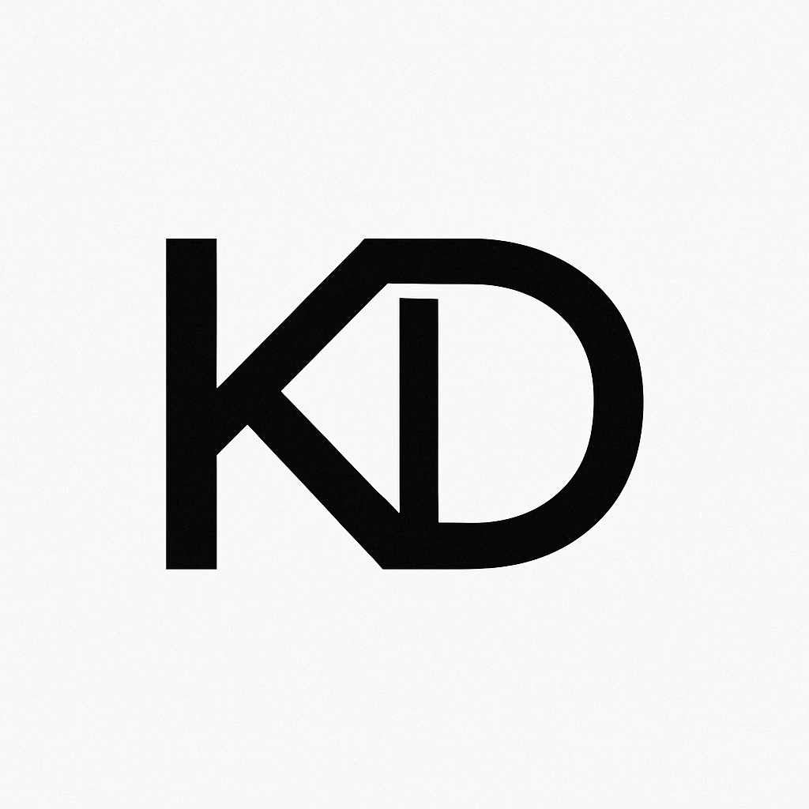
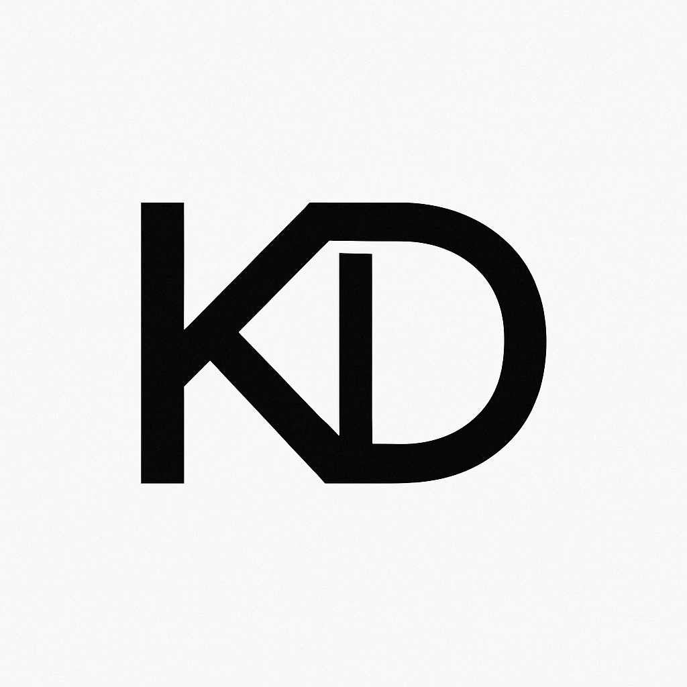

About Me
I'm a cybersecurity-minded IT professional focused on threat analysis, endpoint protection, and infrastructure hardening. This site showcases my hands-on projects, tools I use, and certifications I've earned.
Skills
- Security+
- Azure
- IAM
- EDR
- Splunk
- SIEM
- Nessus
- pfSense
Projects
Cybersecurity Lab (VMWare)
Built a segmented virtual lab with Splunk, Security Onion, Suricata, Nessus, and pfSense. Simulated threat environments for incident detection and remediation.
AWS Cloud Security Lab
Configured T-Pot honeypot on EC2, enabled GuardDuty and VPC flow logs, and used AWS Detective for threat correlation and analysis.
Certifications
- CompTIA Security+
- ISC2 Certified in Cybersecurity
- Microsoft Certified: Azure Fundamentals
- Qualys Vulnerability Management
Contact
Email: reachkevindawson@gmail.com
GitHub: github.com/kevindawsongso
LinkedIn: linkedin.com/in/kevindawsongso
Articles & Insights: Read My Posts